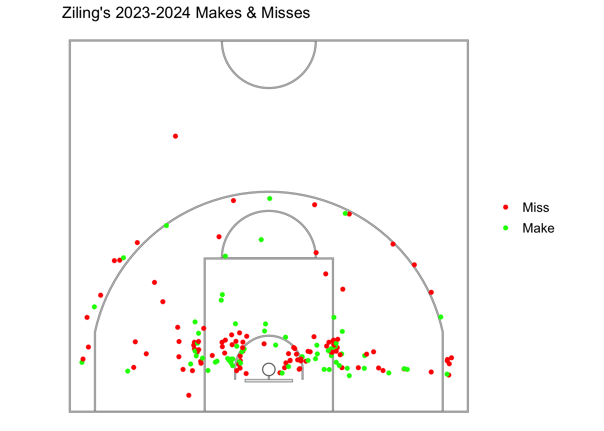
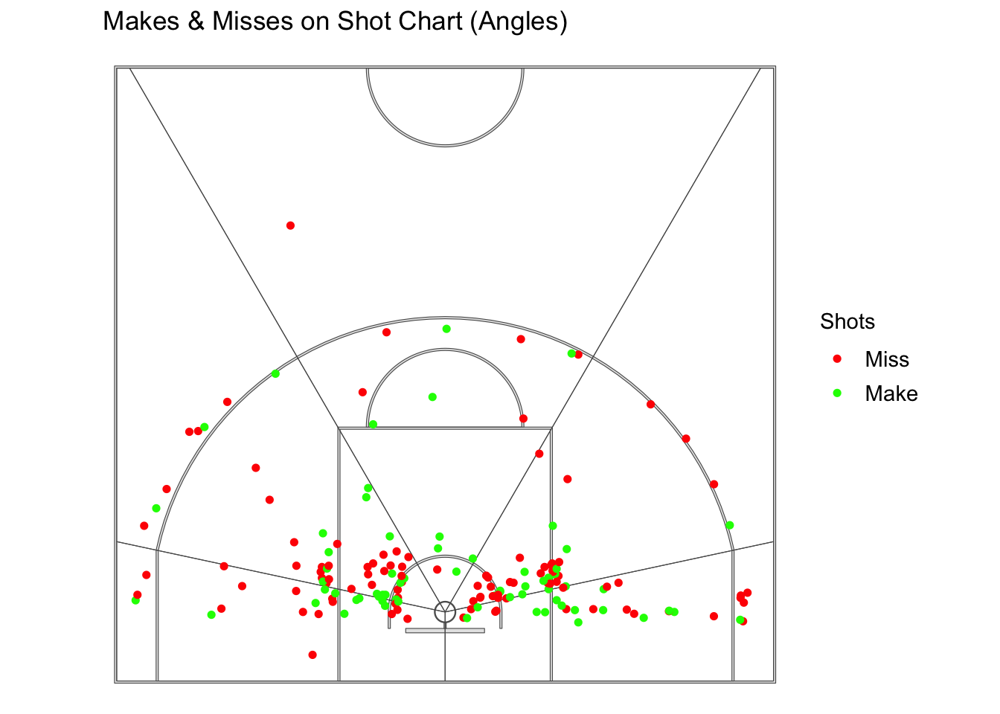
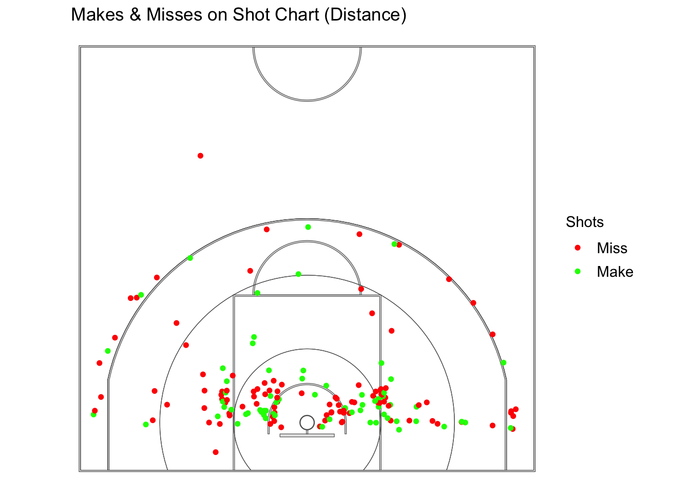
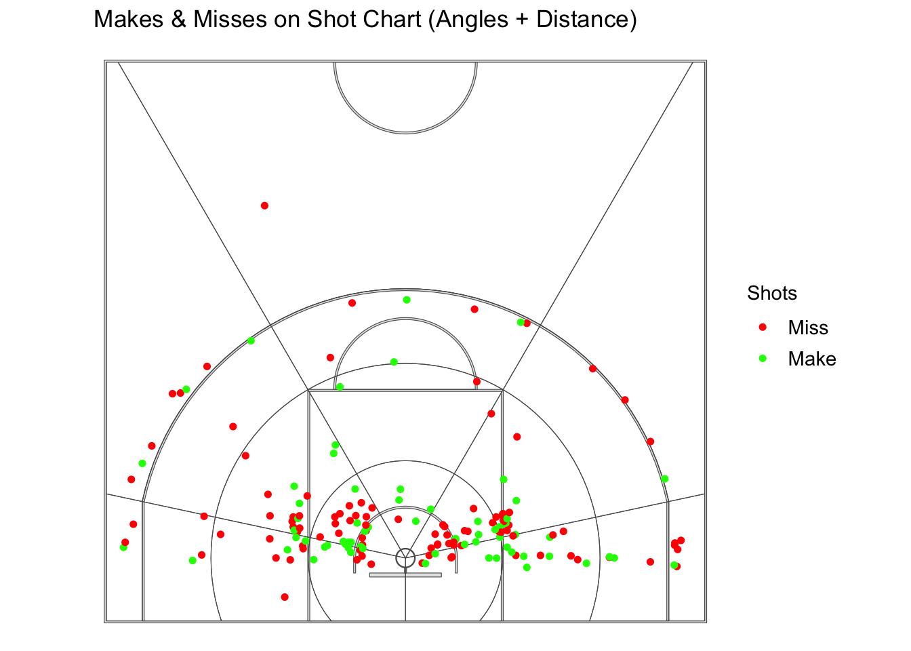
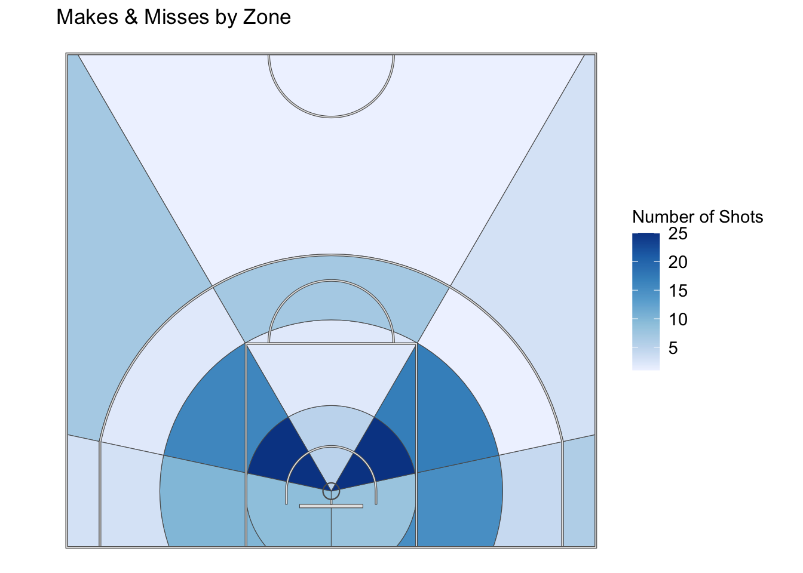
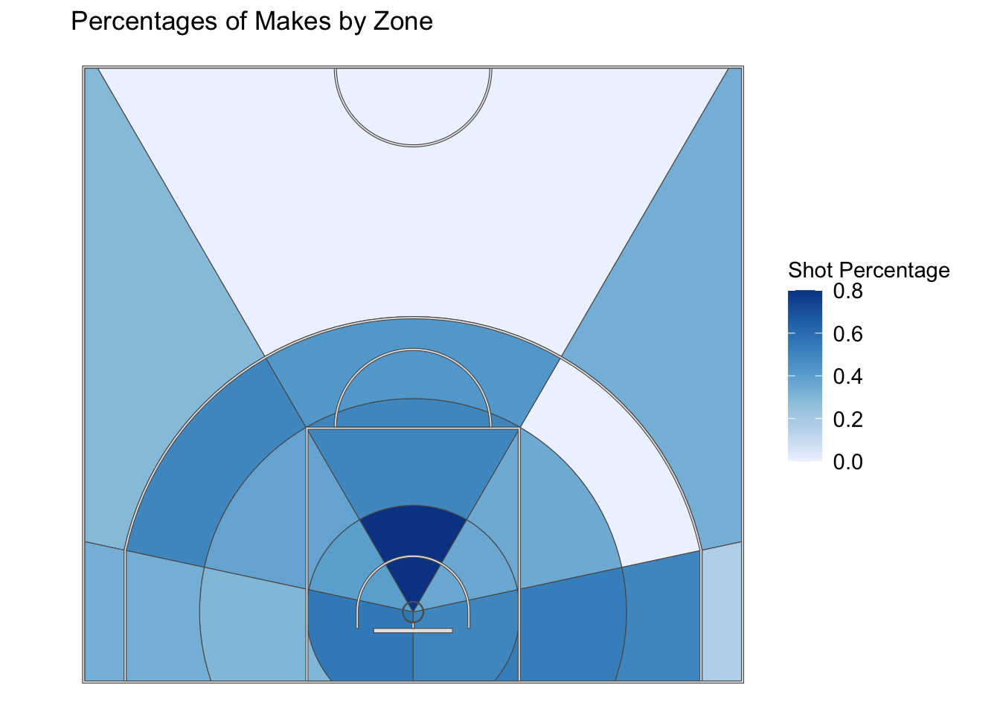
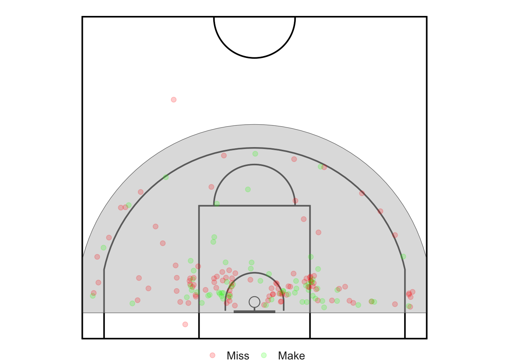
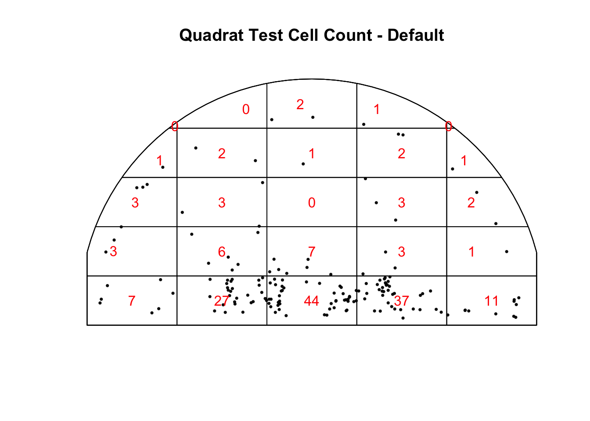

Shot Chart Analysis
Final project for STAT 322 - Statistical Theory where I analyzed my own basketball shot chart in attempt to replicate Brian J. Reich, James S. Hodges, Bradley P. Carlin, and Adam M. Reich’s Bayesian statistic methods. Code referenced off of Oliver Chabot’s Ballbook for court & zones, see here
To view the qmd of this project, click here.
Introduction
Basketball shot charts have gained much popularity over the years; a shot chart is a spatial representation of where a shot is taken, ‘o’s’ represent a success/make, and ‘x’s’ represent failure/missed shot. The best teams and players are now utilizing this chart to show shooting preferences, abilities, and tendencies of where a player likes to shoot. Brian J. Reich, James S. Hodges, Bradley P. Carlin, and Adam M. Reich knew that accurate inferences for shot charts would come from statistical models. These models have predictors that are time-varying and not. Shot frequency, shot location and shot selection were the three different response variables looked at, with a different type of model created for each one.
Methods/Data
Their approach consisted of using spatial models, and Markov chain Monte Carlo (MCMC) model methods to reflect on Sam Cassell’s shot chart for the 2003-2004 basketball season, Cassell took 1270 shots in the 82-game season, and 6 of the game’s data were not available and other issues were recorded but not in the shot chart thus they only modeled 1,139 of the shots. The shot chart data was used in 3 different ways, to predict shot frequency, shot location, and shot success, all of which accounted for various covariates, to turn a descriptive tool into an inferential one. A little introduction about the covariates:
NOKG (Kevin Garnett is not in the game)
NOLS (Latrell Sprewell is not in the game)
HOME (played on home court)
NOREST (team had less than 2 days off since their last game)
BEHIND (losing the game), BLOCK (opponents average more than 4.8 blocks per game)
FGPALL (opponent allowed a field goal percentage under 44%)
MISSLAST (missed last shot)
TEAMFGA (team took more than 80 shots in the game).
Shot Frequency: A multiple linear regression with the log of time between shots as the response, each of the covariates, two interaction terms, and a homogeneous error variance, thus assuming no heteroskedasticity. For the mean parameters normal priors were chosen with a mean of 0, and a variance of 1,000, for the error variance, the prior chosen was the inverse gamma function. An issue was that some of the covariates, such as NOKG, NOLS, and BEHIND, could change values between shot attempts, but the exact time of change is unknown, so an error-in-covariates was considered for the proportion of time between each shot.
Shot Location: Since the game is about making a basket, polar coordinates are used, in this case, it is the distance from the basket in feet. The court was divided into an eleven-by-eleven grid, however, the semi-circle within 2 feet they defined as Region 1, this region is in what we call the restricted area, this area is an arc extending 4 feet from in which its purpose is to prevent charges in this area thus the offensive player (the one shooting it) has more incentive to shoot it in this area if there is a defender there. Shots taken here are usually in transition or taken immediately following a rebound, so it was decided that this region would have no neighbors. Neighbors in spatial analysis are the regions that are adjacent to each other, since Cassell had cells at zero shot attempts and multiple cells had four or fewer attempts, neighboring cells played an important role in obtaining estimates of covariate effects. A statistical model now tests the significance of each covariate’s association with shot location. The conditionally autoregressive (CAR) distribution is often used as a prior in spatial modeling, this distribution is especially useful in this case since it is used to account for possible correlation among observations made across our regions. Where the spatially varying coefficient of covariate is given a CAR(\(\tau_k\)) prior. Thus two types of neighbors were examined, angle neighbors, regions that are the same distance from the basket, and distance neighbors, adjacent regions that are the same angle from the middle of the court. Thus two neighbor relation CAR (2NRCAR) extends the CAR distribution to account for angle neighbors and distance neighbors. The prior for this is a bit more complex but simplifies to the usual CAR prior if \(\beta_k\)=0.5; \(\beta_k\)>0.5 indicates stronger smoothing of angle neighbors, where \(\beta_k\)<0.5 indicates stronger smoothing of distance of neighbors, where \(\beta_k\) is an indicator variable which determines the influence of the neighbor types. Each \(\beta_k\) was given an independent Uniform(0,1) prior and \(\beta_k\) was given independent Gamma(0.01, 0.01) priors (Reich et al. 2006). The Markov chain Monte Carlo method comes into action here, this method allows “for parameter estimation such as means, variances, expected values, and exploration of the posterior distribution of Bayesian models”, this is done by simulation of random sampling (“Markov Chain Monte Carlo” 2016). 30,000 samples from the posterior distribution were drawn, \(\beta_{kj}\) was updated by normal distribution, and \(\beta_k\) was updated by beta candidate distribution implementing a Metropolis-Hasting algorithm, thus meaning the Markov Chain converges to that distribution. At the same time, \(\tau_k\) followed a gamma full conditional distribution, full condition distributions are distributions of each parameter given all the parameters in the data and was updated using Gibbs sampling. Then the models were compared using the deviance information criterion (DIC), a generalization of the AIC, thus penalizing larger models, thus a smaller DIC is desired.
Shot Success: Multiple logistic regressions were used to model the shooting percentage and the 2NRCAR prior was used to differentiate between smoothing of angle and distance neighbors.
Results
Shot Frequency: It was found that Cassell attempted an average of 15.0 shots per game and that the median game time between his shots was 1.6 minutes. The results of the error-in-covariates model were similar to a model that used only each covariate’s value at the time of the shot and was much simpler, thus the simpler model was used. It was found that the posterior median of the model with NOKG, NOLS, and NOKG*NOLS was 0.88, meaning that the posterior median time between shots was 12% shorter when both Sprewell and Garnett were not playing. The model with the interaction BEHIND and 2HALF/OT also had a 12% shorter posterior median time, the model with NOREST had a posterior median time that was 13% longer than if the team had more than 2 days off since their last game.
Shot Location: The final models showed the different effects of covariates and how they affected Cassell shot selection. It was found that removing Garnett or Sprewell does not significantly affect Cassell’s shot selection, there is also little significance of of MISSLAST in his shooting percentage. For BLOCK, 2HALF/OT, and NOREST the posterior median of \(\beta_k\) was greater than 0.5, meaning greater smoothing of angle neighbors, thus these predictors have more influence of the distance than the angle.
Shot Success: It was found that they could not conclude that Cassell’s shooting percentage changes with distance more than with angle, but more so that his shooting percentage decreased when Garnett was not in the game
Discussion
Overall, this paper discussed a new way of using Bayesian statistics to analyze basketball shot charts. For shot frequency it was expected that Cassell take more of his shots in the fourth considering he was known for being a confident and end of game finisher. This however could be explained by the Timberwolves holding the ball near the end of the game, thus taking less shots, to keep the lead. In basketball there is a 24 countdown timer that starts when a team takes possession of the ball, it is strategic if you are winning to use as much of this time as possible to keep the other team from being able to score and catch up. However, in the models tested, BEHIND, and the interaction between BEHIND and 2HALF/OT was not significant goes against our original thought of Cassell shooting more in the 4th. For the models with NOKG, NOLS and NOKG*NOLS, the time between shots was shorter, this could be explained by Cassell having to step up and be more aggressive with those teammates out. However, for shot location it is found that Cassell will still shoot in the same spots with or without Garnett or Sprewell on the floor suggesting that he is consistent in his shots and his teammates don’t affect that even though typically depending on who you’re playing with their playing style affects yours. Some limitations for these models would be that Cassell was a star player, for the players who don’t play as much, don’t have as many shots to plot thus leaving more empty zone contributing to a weaker analysis.
Replication: Methods/Data
I attempted to try to analyze my own basketball shot chart. This process involved lots of data manipulation and ultimately just running a multiple logistic regression model. First, I created my own dataset of all the shots I took (169) in the 2023-2024 season with the covariates:
behind (1 for behind in the game, 0 not behind)
home, (1 for home court, 0 for not at home)
miss_last (1 for miss last shot, 0 for did not miss last shot)
no_rest (1 for less than 3 days since the last game, 0 for more than 3 days).
Then, came the exploratory data analysis, I was able to plot all of these shots and aggregate my shots to fill in different zones of the shot chart “Ballbook/01-Shots_data.Rmd at Main · Olivierchabot17/Ballbook” (n.d.). Since I had taken significantly less shots than Cassell I opted for a five-by-four grid of twenty zones instead of an eleven-by-eleven. Finally, came the statistical modeling, again I attempted to figure out how to model my data by setting uninformative priors on my covariates but ultimately was unsuccessful thus I just did some regular spatial analysis and ran a logistic regression model. Keeping in mind I should’ve ran a mixed model instead to account for the non independence in my data, considering factors such as fatigue, confidence, and defensive pressure can affect shooting performance from one shot to the next, as well as shots taken from similar positions on the court may be influenced by similar factors such as distance from the basket, angle to the hoop, and defensive coverage.
This shot chart shows the location of my shots for the 2023-2024 Season. Green represents makes, where red represents misses. Out of the 169 shots taken (not including freethrows) I made 68 of those shots (40.24%), thus meaning I missed 101 of those shots (59.76%).
This shot chart shows the location of my shots for the 2023-2024 Season. Green represents makes, where red represents misses. Out of the 169 shots taken (not including freethrows) I made 68 of those shots (40.24%), thus meaning I missed 101 of those shots (59.76%).

| shot_zone_area | shots_taken |
|---|---|
| Left Side | 33 |
| Left Center | 46 |
| Center | 15 |
| Right Center | 50 |
| Right Side | 25 |
| shot_zone_area | shot_made | shots_taken |
|---|---|---|
| Left Side | Miss | 18 |
| Left Side | Make | 15 |
| Left Center | Miss | 30 |
| Left Center | Make | 16 |
| Center | Miss | 7 |
| Center | Make | 8 |
| Right Center | Miss | 31 |
| Right Center | Make | 19 |
| Right Side | Miss | 15 |
| Right Side | Make | 10 |
Now, we’ve divided the court into 5 different angles, left side, left center, center, right center, and right side. We can see that I take the most shots from the left center and the right center. I shot 45.5% from the left side, 34.8% from left center, 53.3% from the center, 38% from the right center, and 40% from the right side.

| shot_zone_range | shots_taken |
|---|---|
| 0-8 ft | 72 |
| 8-16 ft | 60 |
| 16-24 ft | 17 |
| 24+ ft | 20 |
| shot_zone_range | shot_made | shots_taken |
|---|---|---|
| 0-8 ft | Miss | 40 |
| 0-8 ft | Make | 32 |
| 8-16 ft | Miss | 36 |
| 8-16 ft | Make | 24 |
| 16-24 ft | Miss | 10 |
| 16-24 ft | Make | 7 |
| 24+ ft | Miss | 15 |
| 24+ ft | Make | 5 |
Now, we’ve divided the court into 4 different distances, 0-8 ft, 8-16 ft, 16-24 ft, and 24 ft. Taking my height into consideration 5 feet 5 inches it is not that unusual that the distance I take the most shots from is the 0-8 ft zone since most players my height are either really good at shooting the 3 point shot and/or really fast thus being able get past everyone with speed for a closer shot. I shot 44.4% from the 0-8 ft, 40% from 8-16 ft, 41.2% from 16-24 ft, and 25% from 24 ft.

Now, we have our court divided up by distance and angles. Not going to go too much detail into percentages, but we can see that I do prefer certain zones on the court more than others.
| zones | shot_count | shots_missed | shots_made | shot_percentage |
|---|---|---|---|---|
| 0-8 ft Center | 5 | 1 | 4 | 0.8000000 |
| 0-8 ft Left Center | 25 | 16 | 9 | 0.3600000 |
| 0-8 ft Left Side | 8 | 4 | 4 | 0.5000000 |
| 0-8 ft Right Center | 25 | 15 | 10 | 0.4000000 |
| 0-8 ft Right Side | 9 | 4 | 5 | 0.5555556 |
| 16-24 ft Center | 7 | 4 | 3 | 0.4285714 |
| 16-24 ft Left Center | 1 | 1 | 0 | 0.0000000 |
| 16-24 ft Left Side | 4 | 2 | 2 | 0.5000000 |
| 16-24 ft Right Center | 2 | 1 | 1 | 0.5000000 |
| 16-24 ft Right Side | 3 | 2 | 1 | 0.3333333 |
| 24+ ft Center | 1 | 1 | 0 | 0.0000000 |
| 24+ ft Left Center | 3 | 2 | 1 | 0.3333333 |
| 24+ ft Left Side | 6 | 5 | 1 | 0.1666667 |
| 24+ ft Right Center | 7 | 5 | 2 | 0.2857143 |
| 24+ ft Right Side | 3 | 2 | 1 | 0.3333333 |
| 8-16 ft Center | 2 | 1 | 1 | 0.5000000 |
| 8-16 ft Left Center | 17 | 11 | 6 | 0.3529412 |
| 8-16 ft Left Side | 15 | 7 | 8 | 0.5333333 |
| 8-16 ft Right Center | 16 | 10 | 6 | 0.3750000 |
| 8-16 ft Right Side | 10 | 7 | 3 | 0.3000000 |

This shot chart shoes the number of shots total I took in each zone, with a white/lighter blues is a lower amount of shots taken and a darker blue means a higher amount.

This shot chart plots the percentages of makes by zone, in the table above we are able to see those specific percentages, for white/lighter blues is a lower percentages and a darker blue means a higher percentage.
Results & Discussion
Logistic Regression
| term | estimate | std.error | statistic | p.value |
|---|---|---|---|---|
| (Intercept) | 1.2977110 | 1.0433097 | 1.2438405 | 0.2135583 |
| home | -0.6220014 | 0.9362024 | -0.6643878 | 0.5064422 |
| norest | 1.8663761 | 1.1649889 | 1.6020548 | 0.1091435 |
| behind | 1.3108624 | 0.9066775 | 1.4457868 | 0.1482370 |
| miss_last | -8.2189173 | 1.4267968 | -5.7603978 | 0.0000000 |
These are the exponentiated coefficients of the model.
| x | |
|---|---|
| (Intercept) | 3.6609071 |
| home | 0.5368689 |
| norest | 6.4648262 |
| behind | 3.7093712 |
| miss_last | 0.0002695 |
I ran a model with all of my predictors I had in my dataset to see if any them were significant, the only one that was, was miss_last, this was weird however because its standard error was the largest out of all of the predictors. The predicted odds that I make my shot decrease by 99.97% if I missed the shot before that, and you keep the predictors home, behind and no rest constant. This feels very accurate in that I know my confidence decreases when I miss a shot therefore contributing bad feelings that could potentially cause me to miss the next one, but shooters got to shoot. The predicted odds that I make my shot are 3.66, if it is not a home game, if we got more than 3 days of rest, if we were behind in the game and if I missed the shot previous to this attempt.
| term | estimate | std.error | statistic | p.value |
|---|---|---|---|---|
| (Intercept) | 1.386294 | 1.118034 | 1.2399394 | 0.2149978 |
| zones0-8 ft Left Center | -1.961658 | 1.193152 | -1.6440981 | 0.1001559 |
| zones0-8 ft Left Side | -1.386294 | 1.322876 | -1.0479400 | 0.2946662 |
| zones0-8 ft Right Center | -1.791759 | 1.190238 | -1.5053791 | 0.1322266 |
| zones0-8 ft Right Side | -1.163151 | 1.303840 | -0.8920959 | 0.3723415 |
| zones16-24 ft Center | -1.673976 | 1.354006 | -1.2363135 | 0.2163420 |
| zones16-24 ft Left Center | -16.952363 | 1455.397962 | -0.0116479 | 0.9907065 |
| zones16-24 ft Left Side | -1.386294 | 1.500000 | -0.9241962 | 0.3553842 |
| zones16-24 ft Right Center | -1.386294 | 1.802776 | -0.7689778 | 0.4419065 |
| zones16-24 ft Right Side | -2.079442 | 1.658312 | -1.2539504 | 0.2098600 |
| zones24+ ft Center | -16.952363 | 1455.397962 | -0.0116479 | 0.9907065 |
| zones24+ ft Left Center | -2.079442 | 1.658312 | -1.2539504 | 0.2098600 |
| zones24+ ft Left Side | -2.995732 | 1.565248 | -1.9139031 | 0.0556325 |
| zones24+ ft Right Center | -2.302585 | 1.396424 | -1.6489154 | 0.0991650 |
| zones24+ ft Right Side | -2.079442 | 1.658312 | -1.2539504 | 0.2098600 |
| zones8-16 ft Center | -1.386294 | 1.802776 | -0.7689778 | 0.4419065 |
| zones8-16 ft Left Center | -1.992430 | 1.227834 | -1.6227198 | 0.1046493 |
| zones8-16 ft Left Side | -1.252763 | 1.232014 | -1.0168420 | 0.3092286 |
| zones8-16 ft Right Center | -1.897120 | 1.231530 | -1.5404575 | 0.1234489 |
| zones8-16 ft Right Side | -2.233592 | 1.313846 | -1.7000415 | 0.0891231 |
These are the exponentiated coefficients of the model.
| x | |
|---|---|
| (Intercept) | 4.0000000 |
| zones0-8 ft Left Center | 0.1406250 |
| zones0-8 ft Left Side | 0.2500000 |
| zones0-8 ft Right Center | 0.1666667 |
| zones0-8 ft Right Side | 0.3125000 |
| zones16-24 ft Center | 0.1875000 |
| zones16-24 ft Left Center | 0.0000000 |
| zones16-24 ft Left Side | 0.2500000 |
| zones16-24 ft Right Center | 0.2500000 |
| zones16-24 ft Right Side | 0.1250000 |
| zones24+ ft Center | 0.0000000 |
| zones24+ ft Left Center | 0.1250000 |
| zones24+ ft Left Side | 0.0500000 |
| zones24+ ft Right Center | 0.1000000 |
| zones24+ ft Right Side | 0.1250000 |
| zones8-16 ft Center | 0.2500000 |
| zones8-16 ft Left Center | 0.1363636 |
| zones8-16 ft Left Side | 0.2857143 |
| zones8-16 ft Right Center | 0.1500000 |
| zones8-16 ft Right Side | 0.1071429 |
This model looks at zones that are part of the eleven-by-eleven grid. None of these zones are significant at the 0.05 level. We can see that if I shoot it from 0-8 ft range in the center the predicted odds I make the shot are 4.00, shooting it from anywhere else the predicted odds decrease from 99.99% to 69%.
I also ran a model with zones and miss_last, and their interaction, none of the coefficients were significant. Out of curiosity I ran a drop-in-deviance test to see if the addition of the interaction term was significant. To my surprise it was. However, with the amount of zones some didn’t have a make and a miss in the zone thus that interaction did not exist.
This project has sparked some curiosity what more I can do with this dataset. I hope that one day I’ll understand more complex models in the spatial world to replicate setting priors on my covariates for posterior parameters.
Spatial Analysis For Fun (Quadrat Test & Moran’s I)
Testing for clustering! Looking at our shot chart by eye, there is apparent clustering, primarily on the left (angle) and right (angle) areas.

This is the window of shots we are going to keep in our analysis, this removes two shots that typically aren’t going to take.

If the shots were spatially random, then we can imagine that the observed number of points within each cell would be similar for all equally sized cells. This is definitely NOT the case. To confirm it we run a quadrat test, the Chi-squared test of CSR, to test for distribution patterns such as clustering and randomness.
Warning: Some expected counts are small; chi^2 approximation may be inaccurate
Chi-squared test of CSR using quadrat counts
data: shots_ppp
X2 = 366.56, df = 24, p-value < 2.2e-16
alternative hypothesis: two.sided
Quadrats: 25 tiles (irregular windows)We can see that based off the quadrat test there’s a \(\chi^2\) value of 366.56 and p-value of \(2.2 \times 10^{-16}\), which is SUPER small, thus we can reject the null hypothesis and conclude that this does not follow the Chi-squared distribution and that there is clustering of the shots I took in the season.
Moran’s I
Monte-Carlo simulation of Moran I
data: shots_aggregated$shot_count
weights: shots_nbw
number of simulations + 1: 500
statistic = 0.17458, observed rank = 470, p-value = 0.06
alternative hypothesis: greaterOur Test
\(H_O\): No spatial autocorrelation, I is close to 0
\(H_A\): Spatial autocorrelation, I \(\neq\) 0.
Calculating Moran’s I for the number of shots taken in using Monte Carlo’s simulations we get a Moran’s I of 0.175 which is positive and weak. We got a p-value of 0.078. We can not reject the null hypothesis and conclude that there is not significant evidence that the number of shots taken is spatially autocorrelated. It is pretty apparent in my shot chart that I prefer to shoot more in some areas than others.
The record of the team this year was 4-20 so for the predictor “behind” we were pretty much behind in every game meaning that I was playing pretty much the same whether we were winning or losing. For home or away, the best two games I played this year were both away game, meaning I was pretty consistent playing well at home and away since most player do play significantly better in a place they’re familiar with. In the future I would like to add my shots from the 23-24 and 24-25 season to see my overall percentages and see if my shots are still super clustered, hopefully with more data I will be able to run a mixed model since I’ll hopefully have enough shots in every zone.
References
Chabot, Olivier. n.d. 1 Overview Spatial Analysis of Basketball Shots in R. Accessed May 16, 2024. https://duddhawork.com/ballbook/index.html.
Reich, Brian J., James S. Hodges, Bradley P. Carlin, and Adam M. Reich. 2006. “A Spatial Analysis of Basketball Shot Chart Data.” The American Statistician 60 (1): 3–12. https://www.jstor.org/stable/27643720.